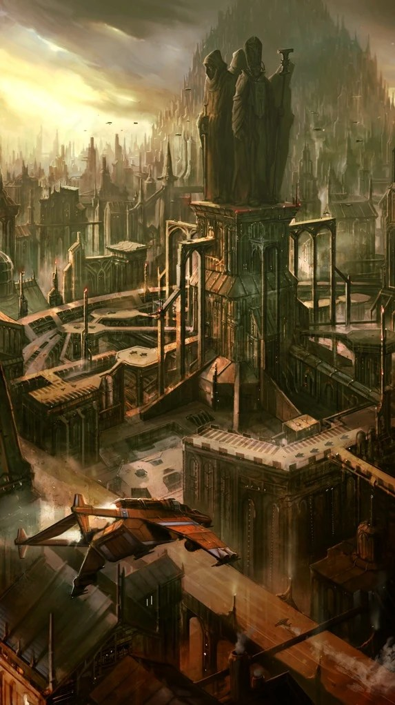
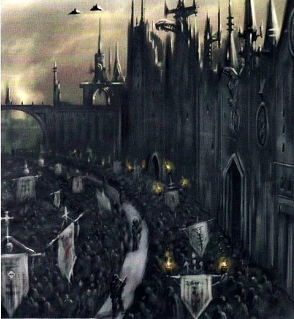

Shrine world
| Shrine world | |
|---|---|
| Class of Imperial world | |
 Temple-city of a shrine world, from a pilgrims' devotional print Artwork © Games Workshop | |
| Classification | Planetary type of the Administratum; a world may also be an Agri-world, a Hive world or a Desert world[a] |
| Sacred to | The Imperial Cult, the Emperor of Mankind and an Imperial saint |
| Defining sites | Cathedrals, temples, shrines, mausolea and the tombs or relics of a saint |
| Rule | A planetary governor sharing power with the local Adeptus Ministorum, or a cardinal on a Cardinal world |
| Visited by | Pilgrims of the Imperial Cult, in numbers that can swamp the native population |
| Guarded by | The Adepta Sororitas, the Astra Militarum and, at times, Space Marine Chapters |
| Examples | Terra, Hagia, Herodor, Macharia, Drusus Shrine World, Ophelia VII, Benediction |
A shrine world is a planet of the Imperium of Mankind that the Imperial Cult holds sacred. It is dominated by the worship of the Emperor of Mankind and by acts of devotion to him, and it is usually studded with cathedrals, temples and shrines to the Emperor and to his saints. Most shrine worlds owe their status to a famous Imperial saint, and many are the world where the saint was born, preached, died or was laid to rest, or where the saint performed a miracle in the Emperor's name. A few mark the field of a battle of particular importance in the history of the Imperium.[1][2]
A shrine world can belong to another planetary class at the same time. Hagia, the birthplace and burial place of Saint Sabbat, is also an Agri-world, and Herodor is also a Hive world. Shrine worlds are frequently directly controlled by the Ecclesiarchy, and may be training grounds for members of the Adeptus Ministorum and the Adepta Sororitas. Those that the Church rules outright are recorded by the Administratum as cardinal worlds, and every cardinal world is also a shrine world. The holiest shrine world of all is Terra, the Throneworld, which is the goal of the greatest pilgrimages in the Imperium.[1][3]
The economy of a shrine world is shaped by its visitors. Pilgrims come in great companies, many of them spending their whole lives and their fortunes on the journey, and the trade that serves them in prayer-scrolls, devotional objects and relics, true and false, can matter more to a shrine world than its own harvest or industry. In the Era Indomitus the shrine worlds are among the principal targets of the forces of Chaos, who seek to desecrate them, and the Imperium has defended many of them at great cost.[4][5]
Characteristics
[edit]Appearance and population
[edit]The surface of a shrine world is commonly covered with the buildings of the faith: cathedrals, chapels, reliquaries, mausolea and the hostels in which pilgrims lodge. They may stand on a single continent, as on a world devoted wholly to the Church, or beside the ordinary cities and farms of a world that has another function. On Hagia, a world of herdsmen and farms, the sacred places are the tomb of Saint Sabbat and the capital city of Holy Doctrinopolis, while Herodor is a world of hives whose holy site is the River Civitas.[1][6]
Shrine worlds need not be fertile. The Drusus Shrine World, also called Sentinel, at the rimward limit of the Calixis Sector, is a desert of dust bowls and salt flats, and its one important structure is the Drusus Shrine, a tower of ouslite and rockcrete five thousand metres high in the southern hemisphere. The eternal flame of Saint Drusus burns at its summit, tended by a sect of priests and by the flocks of pilgrims, most of whom come to Sentinel to die. Passage to the world is expensive and a return is not assured. The salt-licks beneath the shrine are littered with the dried bones of those who walked out into the desert in search of visions, a practice the priests call "walking into silence".[7]
Guardians
[edit]The Ecclesiarchy keeps the shrines, receives the offerings of the faithful and maintains the missions and schools of the diocese. The Adepta Sororitas keep preceptories on the more important shrine worlds, and several Space Marine Chapters, among them the Black Templars, have at times guarded such places. The Adeptus Arbites are often called to keep order among the crowds at the great feasts. Where the governor is a secular lord, the shrine world pays the Imperial tithe to the Administratum, and the Church collects its own offerings.[4][3]

Related classes of world
[edit]Cardinal worlds
[edit]A cardinal world is a shrine world that the Ecclesiarchy governs directly. Its sanctuaries, cathedrals and temples may cover whole continents, and its planetary governor is always a cardinal of the Adeptus Ministorum, who often leads the Church's hierarchy across an entire sector. Cardinal worlds are centres of the Church's power and bases for many orders of the Adepta Sororitas. The most important is Ophelia VII, whose spiritual weight in the Imperial Cult is second only to that of Terra. Another is Benediction, in the Talledus System of the Veritus Sub-sector, where a cardinal rules a population of one hundred billion.[3]
Cemetery worlds and the fallen mirrors
[edit]Akin to the shrine worlds are the cemetery worlds, on which large areas of the planet are given over to the remains of the honoured dead. Some mark the site of a great battle, some are covered with the mausolea of noble families, and a few hold the plots of the people of a nearby hive world. There are also dark mirrors of the shrine worlds, fallen worlds beyond the Emperor's grace where heretical cultists offer ceaseless prayers to the Ruinous Powers. The Imperium does not suffer such places to exist for long when they lie within realspace.[1]
History
[edit]Saints and holy places
[edit]The shrine worlds follow the saints. The Imperial Cult grew from the worship of the Emperor in the ages after the Horus Heresy, and its sacred places gathered around the Emperor, the loyal primarchs and the first saints. Worlds made holy later were nearly all made so by one saint or one event, and the Imperium has canonised many people over the following millennia.[8][1]
Macharia became a shrine world in 400.M41. The Lord Solar Macharius had begun his crusade of 392–399.M41 there, in the Segmentum Pacificus, and when he died on the voyage home in 400.M41 of a jungle fever caught on the world of Jucha, his body was brought back to Macharia for a state funeral that the High Lords of Terra, the cardinals of the Church and the magi of the Adeptus Mechanicus attended. The Adeptus Ministorum soon after canonised him. A great cathedral was raised over his tomb, and millions of pilgrims now make the journey each Terran year.[9]
Saint Sabbat and the Sabbat Worlds
[edit]The saint whose name is best known to the soldiers of the Imperium is Sabbat, born Sabbat Beati on the pastoral world of Hagia in about 500.M35. In the region of the Segmentum Pacificus that would take her name, much of the land was wild, ruled by Chaos-worshipping barbarians and hostile xenos, and even the worlds that were nominally loyal to the Emperor lay well outside the Imperium. A vision of the Emperor inspired her to rally Humanity and liberate the region in a great crusade against the Ruinous Powers. It lasted 105 Terran years and ended in her martyrdom on the world of Harkalon, where she suffered the Nine Holy Wounds. The White Scars recovered her body and interred it in a great tomb on Hagia called the Shrinehold. She had paused on Herodor during her original crusade to cleanse her wounds in the River Civitas, and the river became a place of pilgrimage.[10][11]
Both worlds became battlefields again in the Sabbat Worlds Crusade, which began in 755.M41. The forces of Chaos took Hagia and mocked the people by calling themselves Infardi, the local word for pilgrims, and the Colonel-Commissar Ibram Gaunt and his Tanith First and Only drove them from Holy Doctrinopolis at heavy cost before he led an honour guard to the Shrinehold to protect the relics from an incoming Chaos fleet. In 773.M41 a girl of the Esholi people of Hagia, believed by many to be the saint reincarnated, appeared on Herodor and joined the Warmaster Macaroth at the front. In the Battle of the Old Hive on Herodor she killed the Chaos magister Enok Innokenti in single combat and led a counter-attack until relief arrived from the world of Morlond. The victory scattered the Chaos force and opened a second front for the crusade.[10][11][6]

The Era Indomitus
[edit]In the Era Indomitus, as the Great Rift spread and the powers of the warp grew bolder, the shrine worlds suffered both from assault and from heresy. The Chaos forces of the Dark Apostle Kor Phaeron attacked Benediction in the Era Indomitus, and reports of miracles and of returned saints on shrine worlds have increased since 999.M41. The Ordo Hereticus watches such reports, since a false miracle may be the work of the warp.[5][3]
Pilgrimage and government
[edit]Pilgrimage
[edit]Pilgrimage is one of the principal acts of the Imperial Cult, and shrine worlds are its goal. The Ecclesiarchy organises pilgrim ships, and the Imperial Navy sometimes escorts them. Many pilgrims die on the way, and those who reach a shrine world may stay there until their death, swelling the poor districts of its cities. The arrival of a great pilgrimage strains the food supply of the host world, and governors rely on nearby agri-worlds for grain. The trade in false relics and spurious miracles is a constant concern of the Church, and the Ordo Hereticus watches for cults that hide behind the forms of devotion.[4][2]
Government
[edit]Where a shrine world is not a cardinal world, its secular governor shares power with the local hierarchy of the Ecclesiarchy, usually headed by a bishop or cardinal of the surrounding diocese. On Sentinel the only law is the rubric of the Imperial Creed, and its rulers are the priests of the shrine. The Drusian sect of the Adeptus Ministorum, the cult of Saint Drusus, the Lord Militant who completed the conquest of the Calyx Expanse in the Angevin Crusade, is one of the largest and most powerful in the Calixis Sector. It holds a hard and ascetic reading of the Creed, and the orthodox clergy of Scintilla regard it with unease.[7][2][b]
Notable shrine worlds
[edit]| World | Notes |
|---|---|
| Terra | The Throneworld, seat of the Golden Throne and the Ecclesiarch; the supreme goal of pilgrimage |
| Hagia | Sabbat Worlds; agri-world, birthplace of Saint Sabbat (c. 500.M35) and site of her tomb, the Shrinehold; attacked in the Sabbat Worlds Crusade (from 755.M41) |
| Herodor | Sabbat Worlds; hive world on which the saint cleansed her wounds in the River Civitas; where she was held to have returned in 773.M41 |
| Macharia | Segmentum Pacificus; starting point of the Macharian Crusade (392–399.M41) and burial place of the Lord Solar, who died in 400.M41 |
| Drusus Shrine World | Calixis Sector, Drusus Marches; desert world of the Drusus Shrine, where pilgrims "walk into silence" |
| Ophelia VII | Cardinal world of the Segmentum Tempestus; its significance to the Imperial Cult is second only to Terra |
| Benediction | Cardinal world of the Talledus System, Veritus Sub-sector; population 100 billion |
Timeline
[edit]| Date | Event |
|---|---|
| c. 500.M35 | Saint Sabbat is born on Hagia; her crusade of 105 years follows |
| 392–399.M41 | The Macharian Crusade begins on Macharia |
| 400.M41 | Macharius dies; his state funeral is held on Macharia, which becomes a shrine world |
| 755.M41 | The Sabbat Worlds Crusade begins; Hagia and Herodor are fought over |
| 773.M41 | Saint Sabbat appears reincarnated on Herodor; victory in the Battle of the Old Hive |
| 999.M41 | The Great Rift opens; shrine worlds become targets of Chaos |
| Era Indomitus | Chaos attacks Benediction; reports of miracles and returned saints multiply |
See also
[edit]
Notes
[edit]References
[edit]- ^ a b c d e "Planet". Warhammer 40k Wiki (Fandom), section "Shrine Worlds". Dark Heresy: Core Rulebook (roleplaying game). Games Workshop. pp. 249-250.
- ^ a b c Warhammer 40,000: Rogue Trader (1st edition). Games Workshop. pg. 134.
- ^ a b c d Psychic Awakening: Faith & Fury (8th edition). Games Workshop. pp. 6-9, 14-17. Dark Heresy: Core Rulebook (roleplaying game). Games Workshop. pg. 250.
- ^ a b c Warhammer 40,000 Rulebook (6th edition). Games Workshop. pg. 153.
- ^ a b Imperial Armour Volume One: Imperial Guard & Imperial Navy. Forge World. pp. 10-12.
- ^ a b Abnett, Dan. Honour Guard (novel). Black Library.
- ^ a b Dark Heresy: Core Rulebook (second edition, roleplaying game). Games Workshop. pg. 323. Guide to the Calixis Sector.
- ^ Imperial Armour Volume Five: The Siege of Vraks, Part One. Forge World.
- ^ Codex: Imperial Guard (5th edition). Games Workshop. pg. 13. "Conqueror of Darkness". White Dwarf 240 (US). Games Workshop. pp. 32-33.
- ^ a b Abnett, Dan. The Sabbat Worlds Crusade (background book). Games Workshop. Abnett, Dan. Sabbat Martyr (novel). Black Library.
- ^ a b Abnett, Dan. First and Only (novel). Black Library. Abnett, Dan. Sabbat Martyr (novel). Black Library.